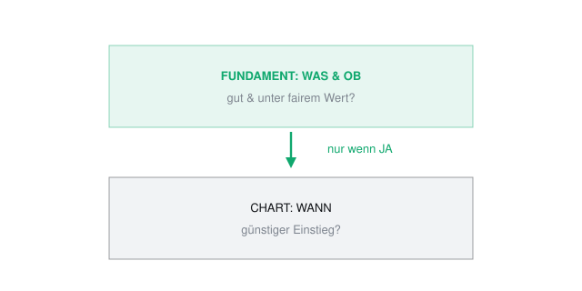
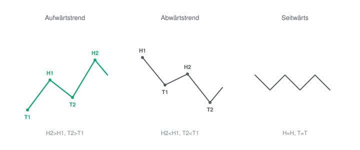
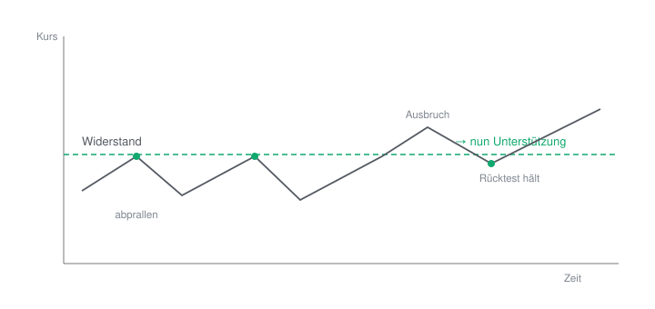
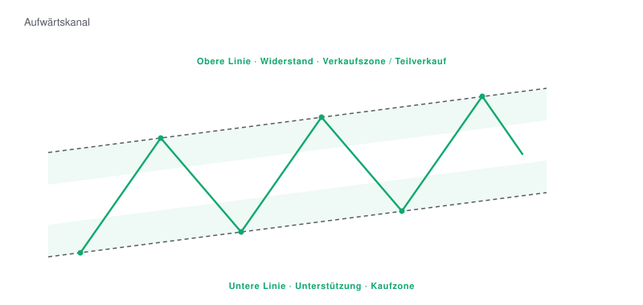
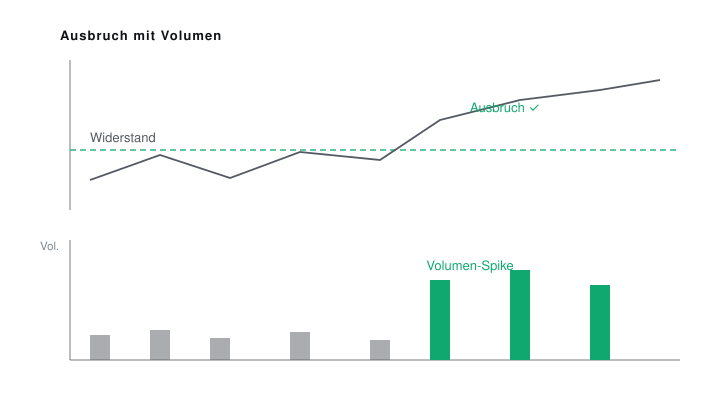
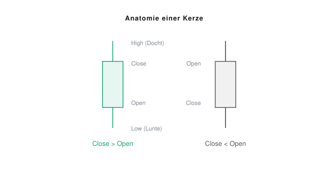
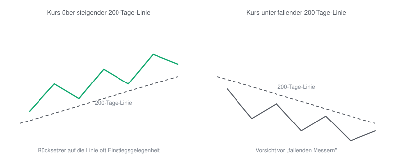
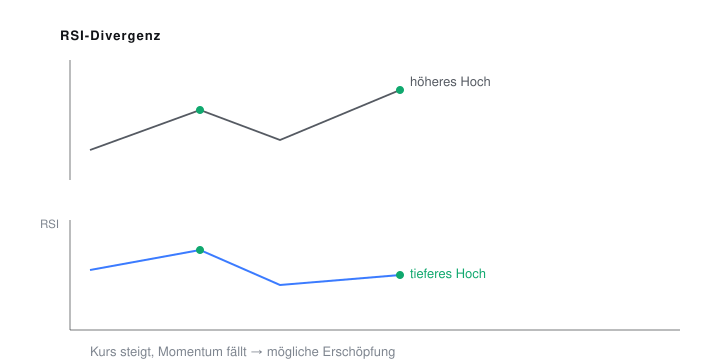
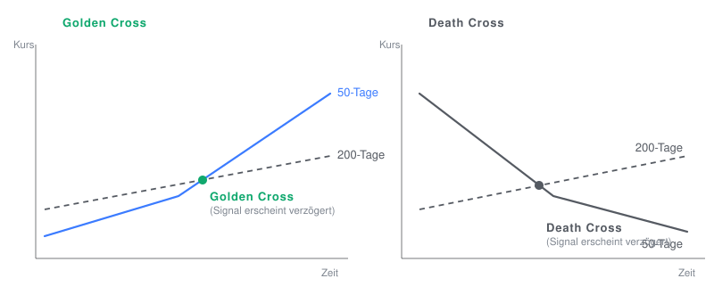
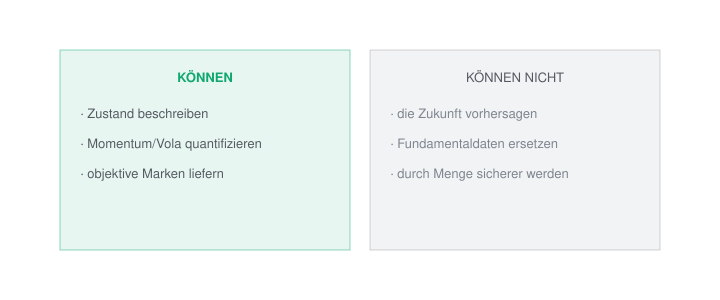

Lernziele
Nach diesem Modul kannst du:
- einordnen, was Chartanalyse leisten kann und was nicht — und warum sie in diesem Kurs ein Werkzeug, keine Weltanschauung ist;
- einen Trend in jeder der drei Richtungen und in jeder der drei Zeitebenen identifizieren;
- Unterstützungen, Widerstände, Trendlinien und Kanäle einzeichnen und ihre Verlässlichkeit einschätzen;
- Volumen als Bestätigungsinstrument lesen und Ausbrüche damit validieren;
- Candlesticks, Gaps und Chartformationen interpretieren, ohne ihnen mehr Bedeutung zuzuschreiben, als sie verdienen;
- die 200-Tage-Linie und den ATR als tragende Werkzeuge einsetzen und die nachrangigen Indikatoren (RSI, MACD, Bollinger Bänder, MA-Kreuzungen) einordnen, ohne sie zu überschätzen;
- erklären, warum jeder Indikator rückwärtsgewandt ist und was das für seine Nutzung bedeutet;
- Chartanalyse und Fundamentalanalyse zu einer Entscheidung zusammenführen — die Brücke zu Modul 4.
3.0Was Chartanalyse ist — und was sie nicht ist
Dieser Abschnitt ordnet den Rest ein. Ohne ihn richtet der Rest Schaden an.
Die drei Denkschulen
| Schule | Grundthese | Haltung dieses Kurses |
|---|---|---|
| Fundamentalanalyse | Der Preis folgt langfristig dem Wert | Das Was und Ob |
| Technische Analyse (rein) | Alle Information steckt bereits im Kurs; Fundamentaldaten sind überflüssig | abgelehnt |
| Kombinierter Ansatz | Fundamentaldaten sagen was zu kaufen, der Chart hilft beim wann | unsere Position |
Die reine technische Analyse — die Vorstellung, man könne allein aus dem Kursverlauf zukünftige Kurse ableiten — steht in einem grundsätzlichen Spannungsverhältnis zur Markteffizienz. Wenn ein Kursmuster zuverlässig Gewinne vorhersagen würde, würden es alle handeln, und es würde dadurch verschwinden. Die empirische Evidenz für die Prognosekraft klassischer Chartmuster ist bestenfalls schwach und methodisch umstritten.
Warum wir Chartanalyse trotzdem verwenden, hat nichts mit Prognose zu tun. Der Chart liefert drei Dinge, die die Fundamentalanalyse nicht liefert:
- Kontext für den Einstiegszeitpunkt. Ein fundamental unterbewertetes Unternehmen im Abwärtstrend kann noch monatelang fallen. Der Chart hilft, nicht ins fallende Messer zu greifen.
- Disziplin durch vordefinierte Marken. Unterstützungen und Widerstände geben objektive Punkte, an denen eine These überprüft wird.
- Ein Bild der Marktpsychologie. Der Chart ist die Aufzeichnung von Angst und Gier der Marktteilnehmer. Er sagt nicht, was kommt — aber er zeigt, in welcher Stimmung der Markt gerade ist.
Merksatz 1Die Chartanalyse beantwortet nie die Frage ob, sondern nur die Frage wann. Wer sie zur Ob-Frage benutzt, hat den ersten und wichtigsten Fehler gemacht.
Die goldene Rangordnung

Eine Aktie, die den Chart-Test besteht, aber den Fundamental-Test nicht, wird nie gekauft. Der Chart hat kein Vetorecht nach oben — nur nach unten (ein schöner Chart macht ein schlechtes Unternehmen nicht kaufbar), und ein umgekehrtes Vetorecht beim Timing (ein guter Chart-Kontext macht ein gutes Unternehmen kaufreifer).
3.1Trends
Definition nach Dow
Ein Trend ist keine Linie, die man mit dem Lineal zieht. Ein Trend ist eine Abfolge von Hoch- und Tiefpunkten:
| Trend | Definition | Merkregel |
|---|---|---|
| Aufwärtstrend | höhere Hochs und höhere Tiefs | „Higher Highs, Higher Lows" |
| Abwärtstrend | tiefere Hochs und tiefere Tiefs | „Lower Highs, Lower Lows" |
| Seitwärtstrend | Hochs und Tiefs auf ähnlichem Niveau | Range / Konsolidierung |

Der entscheidende Punkt: Ein Aufwärtstrend ist erst dann gebrochen, wenn ein tieferes Tief entsteht — nicht schon bei einem Rücksetzer. Ein einzelner roter Tag ist kein Trendbruch. Diese Unterscheidung trennt panische von disziplinierten Anlegern.
Die drei Zeitebenen
Trends existieren gleichzeitig auf mehreren Zeitebenen, und sie können sich widersprechen:
| Ebene | Zeitraum | Für wen relevant |
|---|---|---|
| Primärtrend | Monate bis Jahre | Für uns — der einzig relevante |
| Sekundärtrend | Wochen bis Monate | Timing des Einstiegs |
| Tertiärtrend | Tage | Rauschen — ignorieren |
Für einen mittel- bis langfristigen Anleger ist die tägliche Kursbewegung fast vollständig Rauschen. Wer sie beobachtet, trifft Entscheidungen auf Basis von Zufall.
Merksatz 2„The trend is your friend" — aber nur der Primärtrend. Der Tagestrend ist ein Bekannter, dem man nicht trauen sollte.
3.2Unterstützung und Widerstand
Das Konzept
Unterstützung ist ein Kursniveau, an dem historisch genügend Kaufinteresse auftrat, um einen Kursrückgang zu stoppen.
Widerstand ist das Spiegelbild: ein Niveau, an dem genügend Verkaufsinteresse auftrat, um einen Anstieg zu stoppen.
Warum funktionieren diese Niveaus? Nicht wegen Magie, sondern wegen zweier psychologischer Kräfte: Erinnerung (Marktteilnehmer erinnern sich an frühere Kurse und handeln danach) und Positionierung (wer gerade welche Aktien hält — und deshalb an bestimmten Kursen zum Handeln neigt). Positionierung ist dabei die stärkere Kraft, weil sie nicht bloß ein Gefühl ist, sondern realen Kauf- oder Verkaufsdruck erzeugt:
- Im Minus gefangene Käufer (Widerstand). Wer bei 100 € gekauft hat und bei 80 € im Verlust sitzt, will „bei Plus-Minus-Null" wieder raus. Nähert sich der Kurs erneut 100 €, verkaufen viele dieser Anleger etwa gleichzeitig — der geballte Verkaufsdruck bremst den Anstieg. 100 € wird zum Widerstand, weil dort viele verlustgefangene Positionen auf Erlösung warten.
- Reumütig verpasste Käufer (Unterstützung). Wer bei 80 € kaufen wollte, aber zögerte und den Anstieg verpasste, greift beim Rückfall auf 80 € diesmal zu („zweite Chance"). Dieser Kaufdruck stützt den Kurs — 80 € wird zur Unterstützung.
- Gewinnmitnahme an Marken. Wer bei 50 € gekauft hat, neigt dazu, bei einem runden Verdoppler (100 €) Gewinne mitzunehmen. Auch das ist Positionierung: bestehende Gewinner-Positionen erzeugen Verkaufsdruck an bestimmten Kursen.
- Runde Zahlen (100, 500, 1000) wirken als psychologische Marken, an denen Menschen bevorzugt Orders platzieren.
- Frühere Wendepunkte sind im Bewusstsein der Marktteilnehmer verankert und werden beim erneuten Anlauf bewusst beobachtet.
Der gemeinsame Nenner: Ein Kursniveau wird zur Marke, weil dort viele Marktteilnehmer aufgrund ihrer bestehenden Positionen gleichzeitig zum Handeln neigen. Die Linie ist kein magischer Preis — sie ist der Ort, an dem sich angestauter Handlungsdruck aus alten Positionen entlädt. Das erklärt zugleich, warum eine Marke stärker wird, je öfter sie getestet wurde (mehr Positionen sammeln sich dort an), und warum sie bricht, wenn dieser Druck einmal abgearbeitet ist. Und es erklärt die Polaritätsregel gleich unten: Sind die verlustgefangenen Verkäufer bei 100 € alle ausgestiegen und der Kurs steigt darüber, werden sie zu den reumütig Verpassten, die bei einem Rückfall auf 100 € wieder einsteigen wollen — dieselbe Positionierung, nur umgedreht.
Die Polaritätsregel
Das Kern-Prinzip: Gebrochener Widerstand wird zur Unterstützung — und umgekehrt.

Warum kehrt sich die Rolle einer Linie um? Es ist dieselbe Positionierung wie oben — nur um 180° gedreht. Die Mechanik in drei Phasen:
Phase 1 — Solange die Linie Widerstand ist. An der Marke (sagen wir 100 €) sitzen viele Anleger fest, die dort einmal gekauft haben und bei „plus-minus-null" wieder aussteigen wollen. Ihr geballter Verkaufsdruck bremst jeden Anstieg — der Kurs prallt ab.
Phase 2 — Der Ausbruch. Bricht der Kurs über 100 €, löst sich dieser Verkaufsdruck auf: Die gefangenen Verkäufer sind endlich ausgestiegen, der Vorrat an Verkäufern bei 100 € ist abgearbeitet. Damit verschwindet der Grund, warum die Linie Widerstand war.
Phase 3 — Der Rücktest. Jetzt kehrt sich die Interessenlage um. Wer den Ausbruch verpasst oder darüber gekauft hat, sieht beim Rücktest auf 100 € eine Einstiegsgelegenheit: „Die Marke, die eben noch Widerstand war, ist jetzt durchbrochen — hier steige ich ein." Aus den ehemaligen Verkäufern und den Verpassten werden Käufer. Genau der Kurspunkt, an dem eben noch alle raus wollten, ist nun der Punkt, an dem alle rein wollen — die Linie hält von oben und ist zur Unterstützung geworden.
Das Volumen entscheidet, ob der Rollentausch echt ist. Ein Ausbruch mit hohem Volumen zeigt, dass der Verkaufsdruck wirklich abgearbeitet wurde — die gefangenen Verkäufer sind raus. Ein Ausbruch mit dünnem Volumen ist verdächtig: Dann wurde der Widerstand vielleicht gar nicht geräumt, und der Rollentausch hält nicht — ein sogenannter Fakeout (mehr dazu in 3.4). Deshalb gilt die Polaritätsregel nur für einen Ausbruch, der von Volumen bestätigt ist.
Verlässlichkeit einschätzen
Ein Unterstützungs-/Widerstandsniveau ist umso belastbarer, je mehr dieser Kriterien es erfüllt:
| Kriterium | Schwach | Stark |
|---|---|---|
| Anzahl der Berührungen | 1 | 3+ |
| Volumen an den Berührungspunkten | niedrig | hoch |
| Zeitspanne, über die es hält | Tage | Monate/Jahre |
| Übereinstimmung mit runden Zahlen | nein | ja |
| Übereinstimmung mit einem gleitenden Durchschnitt | nein | ja (Konfluenz) |
Konfluenz — das Zusammentreffen mehrerer unabhängiger Marken auf demselben Niveau — ist eines der belastbarsten Signale der Chartanalyse. Wenn eine horizontale Unterstützung, ein aufsteigender 200-Tage-Durchschnitt und eine runde Zahl auf demselben Kurs liegen, ist dieses Niveau ernst zu nehmen.
Merksatz 3Ein Niveau, das dreimal gehalten hat, ist eine Marke. Ein Niveau, das einmal gehalten hat, ist ein Zufall.
Die Grenze
Unterstützungen und Widerstände sind Zonen, keine Linien. Wer glaubt, eine Unterstützung liege „exakt bei 148,50 €", überschätzt die Präzision. Rechne mit einem Bereich von einigen Prozent. Und: Jede Unterstützung bricht irgendwann. Sie ist keine Garantie, sondern eine erhöhte Wahrscheinlichkeit.
3.3Trendlinien und Kanäle
Trendlinien
Eine Trendlinie verbindet die relevanten Tiefpunkte (im Aufwärtstrend) oder Hochpunkte (im Abwärtstrend).
Regeln für gültige Trendlinien:
- Mindestens zwei Punkte zum Zeichnen, drei zur Bestätigung.
- Im Aufwärtstrend: Tiefs verbinden. Im Abwärtstrend: Hochs verbinden.
- Je flacher die Linie, desto nachhaltiger der Trend. Sehr steile Trendlinien (> 45°) sind selten haltbar.
- Der Kurs muss die Linie nicht exakt berühren — er soll sie respektieren.
Der häufigste Missbrauch: Man legt die Linie so, dass sie zur gewünschten These passt. Bei genügend Fantasie lässt sich in jeden Chart eine Trendlinie zeichnen, die alles beweist. Eine Trendlinie, die man erst durch Ignorieren mehrerer Punkte konstruieren kann, ist keine.
Womit du Trendlinien zeichnest. Eine Trendlinie ist kein Datenprodukt, sondern ein Zeichenwerkzeug, das du selbst in den Chart legst. Jede gängige Charting-Software (auch kostenlose) hat dafür ein Trendlinien-Werkzeug; du brauchst also keine spezielle Datenquelle, sondern nur eine Software mit Zeichenfunktion und ausreichend Kurshistorie. Genau deshalb ist die Disziplin oben so wichtig: Weil du die Linie selbst ziehst, ist die Versuchung groß, sie an die gewünschte These anzupassen.
Kanäle
Ein Kanal entsteht, wenn man parallel zur Trendlinie eine zweite Linie durch die Gegenpunkte zieht:

Kanäle geben einen Rahmen: Am unteren Rand eines intakten Aufwärtskanals ist das Chance-Risiko-Verhältnis für einen Einstieg günstiger als am oberen. Aber auch hier gilt: Kanäle sind Beschreibungen der Vergangenheit, keine Garantien für die Zukunft.
3.4Volumenanalyse
Wenn Chartanalyse überhaupt einen empirisch belastbaren Kern hat, dann diesen: Volumen misst die Überzeugung hinter einer Bewegung.
Das Grundprinzip
Eine Kursbewegung ist so viel wert wie das Volumen, das sie trägt.
Preisbewegung + HOHES Volumen → viele Marktteilnehmer, echte Überzeugung
→ wahrscheinlich nachhaltig
Preisbewegung + NIEDRIGES Volumen → wenige Teilnehmer, leicht umkehrbar
→ wahrscheinlich Strohfeuer
Die vier Grundkonstellationen
| Kurs | Volumen | Interpretation |
|---|---|---|
| steigt | steigt | Gesunder Aufwärtstrend — Käufer dominieren mit Überzeugung |
| steigt | fällt | Warnung — Anstieg verliert Kraft, wenige Käufer treiben ihn |
| fällt | steigt | Ausverkauf / Panik — starker Verkaufsdruck, aber oft Boden nahe |
| fällt | fällt | Gesunde Korrektur — kein Panikverkauf, nur nachlassendes Interesse |
Die entscheidende Anwendung: Ausbrüche bestätigen
Der zentrale Praxis-Einsatz von Volumen ist die Validierung von Ausbrüchen über einen Widerstand oder unter eine Unterstützung.

- Ausbruch mit hohem Volumen → glaubwürdig. Viele Teilnehmer tragen die neue Richtung.
- Ausbruch mit niedrigem Volumen → verdächtig. Häufig ein „Fakeout" — der Kurs fällt kurz danach wieder zurück.
Volumen-Divergenz
Wenn der Kurs neue Hochs macht, das Volumen bei jedem neuen Hoch aber abnimmt, ist die Aufwärtsbewegung von immer weniger Teilnehmern getragen. Das ist eine der zuverlässigsten Warnungen vor einer Trendwende — deutlich verlässlicher als die meisten Chartformationen.
Merksatz 4Der Kurs sagt dir die Richtung. Das Volumen sagt dir, ob es ihm ernst ist. Höre auf beide, aber glaube dem Volumen.
Die Grenze
Bei international gehandelten Aktien ist das Volumen über viele Handelsplätze verteilt; das an einer einzelnen Börse gezeigte Volumen ist unvollständig. Und moderne Marktstruktur (Dark Pools, außerbörslicher Handel) macht das öffentlich sichtbare Volumen zu einem Ausschnitt, nicht zum Ganzen. Volumen bleibt aussagekräftig — aber als Größenordnung, nicht als exakte Messung.
Wo du Volumen siehst. Volumen wird in praktisch jeder Charting-Software als Balkenreihe direkt unter dem Kurschart angezeigt — meist grün/rot je nach Auf- oder Abtag. Dafür genügt eine kostenlose Charting-Plattform (Beispiele, keine Empfehlung: TradingView in der Gratisstufe, oder die Chart-Ansicht der meisten Broker und Finanzportale). Zu beachten ist die Grenze von oben: Das angezeigte Volumen ist meist nur das einer einzelnen Börse; wird eine Aktie an mehreren Handelsplätzen gehandelt, ist das reale Gesamtvolumen höher. Lies Volumen deshalb als Größenordnung, nicht als exakte Zahl.
3.5Gaps (Kurslücken)
Ein Gap ist eine Lücke im Chart: Der Kurs eröffnet deutlich über oder unter dem Schlusskurs des Vortages, ohne dass dazwischen gehandelt wurde. Gaps entstehen, wenn außerhalb der Handelszeit Information eintrifft — Quartalszahlen, Übernahmen, Gewinnwarnungen.
| Gap-Typ | Kontext | Bedeutung |
|---|---|---|
| Breakaway Gap | am Beginn einer Bewegung, aus einer Konsolidierung heraus | Beginn eines starken neuen Trends, oft mit hohem Volumen |
| Runaway / Continuation Gap | in der Mitte eines Trends | Trend beschleunigt, bestätigt Stärke |
| Exhaustion Gap | am Ende einer langen Bewegung | letztes Aufbäumen, oft Vorbote der Wende |
| Common Gap | im Seitwärtsmarkt | bedeutungslos, wird meist schnell „geschlossen" |
„Ein Gap schließen" bedeutet, dass der Kurs später zum Niveau vor dem Gap zurückkehrt. Die verbreitete Regel „Gaps werden immer geschlossen" ist ein Mythos — manche werden es, viele über Jahre nicht.
Für den langfristigen Anleger sind Gaps vor allem in einem Kontext relevant: nach Quartalszahlen. Ein großes Gap nach unten trotz solider Zahlen kann eine Kaufgelegenheit sein; ein Gap nach oben in eine Überbewertung hinein ist ein Grund zur Vorsicht, kein Kaufsignal.
Einem Gap nach oben „hinterherkaufen", weil man Angst hat, etwas zu verpassen. Genau nach einem Aufwärts-Gap ist der Spread breit, die Emotion hoch und das Chance-Risiko-Verhältnis am schlechtesten.
3.6Candlesticks
Aufbau einer Kerze
Jede Kerze verdichtet vier Preise einer Periode:

Der Körper zeigt die Spanne zwischen Eröffnung und Schluss, die Dochte/Lunten die Extreme dazwischen. Die Botschaft: Wer hat die Periode gewonnen — Käufer oder Verkäufer, und wie deutlich?
Die aussagekräftigsten Muster
| Muster | Aussehen | Aussage | Verlässlichkeit |
|---|---|---|---|
| Hammer | kleiner Körper oben, lange Lunte | Käufer haben tiefe Kurse zurückgekauft → mögliche Bodenbildung | mittel |
| Shooting Star | kleiner Körper unten, langer Docht | Verkäufer haben hohe Kurse abverkauft → mögliche Topbildung | mittel |
| Doji | fast kein Körper | Unentschieden, Gleichgewicht → mögliche Wende | niedrig einzeln |
| Bullish/Bearish Engulfing | große Kerze verschlingt die vorige | Machtwechsel zwischen Käufern/Verkäufern | mittel-hoch |
Die realistische Einordnung
Es existieren Dutzende benannter Candlestick-Muster mit teils poetischen Namen. Die ehrliche Bewertung:
- Ein einzelnes Candlestick-Muster hat kaum prognostische Kraft. Die statistische Evidenz ist dünn.
- Candlesticks werden erst nützlich an einer bereits identifizierten Marke — ein Hammer an einer starken Unterstützung mit hohem Volumen ist ein Signal; derselbe Hammer mitten im Nirgendwo ist Rauschen.
- Sie sind ein Timing-Feinschliff, keine Entscheidungsgrundlage.
Merksatz 5Eine Kerze allein bedeutet nichts. Eine Kerze an der richtigen Stelle, mit dem richtigen Volumen, bedeutet etwas. Der Kontext ist das Signal, nicht die Kerze.
3.7Chartformationen
Chartformationen sind wiederkehrende Muster, denen eine Fortsetzungs- oder Umkehrbedeutung zugeschrieben wird.
| Formation | Typ | Zugeschriebene Bedeutung |
|---|---|---|
| Kopf-Schulter | Umkehr | Ende eines Aufwärtstrends |
| Doppeltop / Doppelboden | Umkehr | Zweifacher Fehlversuch → Wende |
| Dreieck (steigend/fallend) | meist Fortsetzung | Konsolidierung vor dem nächsten Zug |
| Flagge / Wimpel | Fortsetzung | kurze Pause im Trend |
| Tasse mit Henkel | Fortsetzung | Basisbildung vor Ausbruch |
Die kritische Perspektive
Chartformationen sind der Bereich, in dem Chartanalyse am stärksten in Richtung Wahrsagerei kippt — und der Bereich mit der schwächsten empirischen Grundlage. Zwei Probleme:
- Rückschaufehler. In jedem Chart lassen sich im Nachhinein Formationen finden. Die entscheidende Frage ist nicht, ob man eine Kopf-Schulter-Formation sieht, sondern ob sie vor dem Ausgang zuverlässig identifizierbar und danach profitabel handelbar gewesen wäre. Diese Frage fällt in kontrollierten Tests meist negativ aus.
- Selbsterfüllung mit Grenzen. Manche Muster funktionieren teilweise, weil viele Marktteilnehmer sie beobachten und danach handeln. Aber genau das macht sie auch anfällig für Fehlausbrüche, weil professionelle Akteure diese Erwartung ausnutzen.
Die Haltung dieses Kurses: Formationen sind allenfalls ein schwaches, ergänzendes Signal. Sie ersetzen niemals Volumen, Trend und Fundamentaldaten. Wer sein Handeln primär auf Chartformationen stützt, hat den Boden der Evidenz verlassen.
Merksatz 6Je hübscher der Name einer Chartformation, desto vorsichtiger solltest du sein. „Tasse mit Henkel" beschreibt die Vergangenheit gut und sagt die Zukunft schlecht voraus.
3.8Die 200-Tage-Linie
Ein gleitender Durchschnitt glättet den Kursverlauf, indem er den Durchschnittskurs der letzten n Perioden bildet und fortlaufend neu berechnet. Für den langfristigen Anleger ist die 200-Tage-Linie der eine gleitende Durchschnitt, den man wirklich braucht — nicht als Prognose, sondern als Zustandsbeschreibung:
- Kurs über steigender 200-Tage-Linie → das Unternehmen ist in einem langfristigen Aufwärtstrend. Rücksetzer auf die Linie sind oft Einstiegsgelegenheiten.
- Kurs unter fallender 200-Tage-Linie → langfristiger Abwärtstrend. Selbst eine fundamental günstige Aktie kann hier lange fallen. Vorsicht mit „fallenden Messern".

Merksatz 7Ein gleitender Durchschnitt kann die Zukunft nicht kennen — er ist nur ein geglätteter Blick in die Vergangenheit. Er beschreibt den Trend gut und sagt die Wende spät.
3.9Die weiteren Indikatoren — zur Einordnung
Die folgenden Indikatoren solltest du als langfristiger Anleger kennen — sie begegnen dir überall —, aber nicht beherrschen müssen. Sie sind Feinschliff, kein Fundament. Es genügt, ihre Grundaussage zu verstehen; die Formeln und Details stehen für Interessierte im ausklappbaren Block dabei, sind aber kein Pflichtstoff.
| Indikator | Was er dir sagt | Wichtigste Warnung / Grenze |
|---|---|---|
| RSI Relative Strength Index |
Ein Fieberthermometer dafür, ob eine Aktie sich zuletzt sehr schnell bewegt hat. Über 70 = lief zuletzt heiß, unter 30 = lief zuletzt kalt. | „Überkauft" heißt nicht „verkaufen" — in starken Trends bleibt der RSI lange über 70. Der eigentliche Wert liegt in Divergenzen, nicht in Schwellen. |
| MACD Moving Average Convergence Divergence |
Zeigt, ob sich ein Trend gerade beschleunigt oder abschwächt. | Nachrangiger Bestätigungsindikator, kein Auslöser. |
| Bollinger Bänder | Ein Band um den Kurs, das sich bei hoher Schwankung weitet und bei niedriger verengt. Die Verengung („Squeeze") kündigt Bewegung an. | Der Squeeze sagt nicht die Richtung — nur, dass Bewegung kommt. Band-Berührung im Trend ist Stärke, kein Umkehrsignal. |
| MA-Kreuzungen Golden Cross, Death Cross |
Kreuzen sich kurze (50-Tage) und lange (200-Tage) Durchschnittslinie, gilt das als Trendsignal. | Stark verzögert — deshalb nur grobe Bestätigung der Trendlage, kein Einstiegs-Timing. |
Formeln und Details (für Interessierte)
Moving Averages: SMA und EMA
Ein gleitender Durchschnitt lässt sich einfach oder gewichtet berechnen:
| Typ | Berechnung | Eigenschaft |
|---|---|---|
| SMA (einfach) | arithmetisches Mittel der letzten n Kurse | träge, gleichgewichtet |
| EMA (exponentiell) | gewichtet zugunsten neuerer Kurse | reagiert schneller |
Neben der 200-Tage-Linie (langfristiger Trend, Referenz-Linie dieses Kurses) ist die 50-Tage-Linie ein häufig zitierter mittelfristiger Trend.
RSI-Formel und Divergenzen
Der RSI misst die Geschwindigkeit und das Ausmaß jüngster Kursbewegungen auf einer Skala von 0 bis 100. Standardperiode: 14.
Interessanter als absolute Werte ist die Divergenz: Wenn der Kurs neue Hochs bildet, der RSI aber niedrigere Hochs — dann trägt immer weniger Momentum die Bewegung. Das ist ein ernster zu nehmendes Signal als jeder absolute RSI-Wert.

Merksatz 8Ein überkaufter RSI in einem starken Trend ist kein Verkaufssignal, sondern ein Stärkesignal. Die Divergenz ist die eigentliche Botschaft des RSI, nicht die Schwelle.
MACD-Formel und Histogramm
Der MACD misst das Verhältnis zweier exponentieller gleitender Durchschnitte zueinander — also die Beschleunigung eines Trends.
Der Mehrwert des MACD gegenüber einem simplen MA-Kreuz liegt im Histogramm, das ein nachlassendes Momentum sichtbar macht, bevor die eigentliche Kreuzung erfolgt. Wie beim RSI liegt der belastbare Einsatz in der Divergenz zum Kurs. Für den langfristigen Anleger bleibt der MACD ein Bestätigungs-, kein Auslöser-Indikator.
Merksatz 9MACD, RSI und gleitende Durchschnitte sagen alle dasselbe auf drei Arten: Wie stark ist das Momentum, und lässt es nach? Drei Indikatoren, die dasselbe messen, sind nicht drei Bestätigungen — sie sind eine.
Bollinger-Formel und Squeeze
Bollinger Bänder legen ein Band um einen gleitenden Durchschnitt, dessen Breite sich mit der Volatilität ändert.
Da statistisch ein großer Teil der Kurse innerhalb von zwei Standardabweichungen liegt, verbringt der Kurs die meiste Zeit innerhalb der Bänder. In einem starken Trend „reitet" der Kurs am oberen (oder unteren) Band entlang — Band-Berührung ist dann ein Trendstärke-Signal, kein Umkehrsignal. Der praktisch relevante Aspekt ist der Squeeze: Eine ausgeprägte Verengung der Bänder zeigt eine Phase niedriger Volatilität an, auf die statistisch oft eine Ausdehnung folgt. Der Squeeze sagt, dass etwas passieren wird — er sagt nicht, in welche Richtung. Deshalb braucht er die Bestätigung durch Ausbruch und Volumen (Abschnitt 3.4).
Merksatz 10Bollinger Bänder messen relative Höhe, nicht Richtung. Der Squeeze kündigt Bewegung an, nicht ihr Vorzeichen.
Golden Cross und Death Cross
| Signal | Definition | Ruf |
|---|---|---|
| Golden Cross | 50-Tage kreuzt 200-Tage von unten nach oben | „bullisch" |
| Death Cross | 50-Tage kreuzt 200-Tage von oben nach unten | „bärisch" |
Diese Kreuzungen sind stark verzögert. Ein gleitender Durchschnitt ist per Konstruktion rückwärtsgewandt — er reagiert erst, nachdem sich der Kurs bereits bewegt hat. Ein Golden Cross erscheint oft erst, wenn ein großer Teil der Aufwärtsbewegung bereits gelaufen ist. Als alleiniges Handelssignal sind sie schwach; als grobe Bestätigung der Trendlage sind sie brauchbar.

3.10ATR (Average True Range)
Definition
Der ATR misst die durchschnittliche Schwankungsbreite einer Aktie pro Periode. Er sagt nichts über die Richtung — nur über das Ausmaß der Bewegung.
Warum ATR für uns wichtiger ist als für die meisten glauben
Der ATR ist kein Signalgeber, sondern ein Risiko-Kalibrierungswerkzeug — und damit die direkte Brücke zu Modul 5:
1. Volatilitätsbewusste Stop-Abstände. Ein Stop-Loss sollte nicht bei einer runden Zahl liegen („−10 %"), sondern im Verhältnis zur normalen Schwankung der Aktie. Ein Stop, der enger ist als die tägliche Normalschwankung (z. B. 1× ATR), wird durch bloßes Rauschen ausgelöst.
Beispiel:
Aktie A: Kurs 100 €, ATR 1,50 € → normale Tagesschwankung 1,5 %
Ein Stop bei −2 % (98 €) liegt knapp über 1× ATR → wird von Rauschen getroffen
Sinnvoller: 2–3× ATR Abstand
Aktie B: Kurs 100 €, ATR 4,00 € → normale Tagesschwankung 4 %
Hier ist ein −2 %-Stop völlig unbrauchbar
2. Positionsgrößen-Kalibrierung. Zwei Aktien mit gleichem Kurs, aber unterschiedlichem ATR tragen unterschiedliches Risiko pro Stück. Der ATR erlaubt, das Risiko zu vereinheitlichen — Kern des Risikomanagements in Modul 5.
Merksatz 11Der ATR sagt dir nicht, wohin. Er sagt dir, wie weit — und das ist genau die Information, die du für deinen Stop und deine Positionsgröße brauchst.
3.11Die große Einordnung: Warum alle Indikatoren rückwärtsgewandt sind
Es lohnt sich, den gemeinsamen Nenner aller Werkzeuge dieses Moduls klar auszusprechen:
Jeder Indikator ist eine mathematische Umformung vergangener Kurse. Er kann per Konstruktion keine Information enthalten, die nicht schon im Kurs steckte. Ein gleitender Durchschnitt, ein RSI, ein MACD — sie alle verdichten und glätten die Vergangenheit. Keiner von ihnen kennt die Zukunft.
Daraus folgt eine praktische Regel: Mehr Indikatoren bedeuten nicht mehr Sicherheit. Wer RSI, MACD, Stochastik und gleitende Durchschnitte gleichzeitig auf den Chart legt, erzeugt keine vier unabhängigen Meinungen, sondern vier Varianten derselben Information — mit dem Effekt, dass sich für jede Entscheidung immer irgendein bestätigendes Signal findet. Das ist Bestätigungsfehler mit technischem Anstrich.

Die minimalistische Empfehlung dieses Kurses: Für einen langfristigen Anleger reichen drei Werkzeuge vollständig aus —
- die 200-Tage-Linie (Trendlage),
- das Volumen (Überzeugung),
- Unterstützung/Widerstand (Marken für Einstieg und Falsifikation).
Alles Weitere ist Feinschliff, nicht Fundament.
Merksatz 12Drei Werkzeuge, die du verstehst, schlagen zwölf, die du nur bedienst.
3.12Die Brücke zu Modul 4: Fundament trifft Chart
Chartanalyse ist in diesem Kurs niemals ein eigenständiger Entscheidungsprozess. Sie greift erst, nachdem die Fundamentalanalyse ein Unternehmen als gut und unterbewertet eingestuft hat. Dann — und nur dann — stellt der Chart drei Timing-Fragen:
- In welcher Trendlage befindet sich die Aktie? (200-Tage-Linie)
- Gibt es eine nahe Unterstützung, die einen günstigen Einstieg und ein objektives Falsifikationsniveau bietet?
- Bestätigt das Volumen die aktuelle Bewegung — oder widerspricht es ihr?
Die vollständige Verbindung — wie man aus einer fundamentalen Kaufzone und einem chart-technischen Kontext einen konkreten Einstiegsplan macht — ist der Inhalt von Modul 4.
Typische Anfängerfehler in Modul 3
| Fehler | Warum er teuer ist | Gegenmittel |
|---|---|---|
| Chartanalyse als Prognose behandeln | Verwechselt wann mit ob | Chart nur nach bestandener Fundamentalanalyse einsetzen |
| Bei RSI > 70 verkaufen | Verkauft die stärksten Trends zu früh | RSI als Momentum lesen, auf Divergenzen achten |
| Trendlinie an die eigene These anpassen | Erzeugt Scheinbestätigung | 3 Punkte verlangen, keine Punkte ignorieren |
| Ausbruch ohne Volumen handeln | Fakeout-Risiko | Ausbrüche immer mit Volumen bestätigen |
| Zwölf Indikatoren gleichzeitig | Bestätigungsfehler, Scheinsicherheit | Auf 200-Tage, Volumen, S/R reduzieren |
| Gap nach oben hinterherkaufen | Schlechtestes CRV, breitester Spread | Auf Rücksetzer warten oder gar nicht |
| Death/Golden Cross als Timing-Signal | Stark verzögert | Nur als grobe Trendbestätigung nutzen |
| Candlestick-Muster isoliert deuten | Kaum prognostische Kraft allein | Nur an bestätigten Marken mit Volumen |
| Tagestrend beobachten | Rauschen erzeugt Aktionismus | Nur Primär- und Sekundärtrend |
| Unterstützung als exakte Linie sehen | Überschätzte Präzision | Als Zone denken, einige Prozent Toleranz |
Checkliste — Chart-Kontext vor dem Kauf
(Erst auszufüllen, nachdem die Fundamental-Checkliste aus Modul 2 bestanden ist.)
- Trendlage bestimmt: Kurs über oder unter der 200-Tage-Linie? Steigt oder fällt die Linie?
- Falls Abwärtstrend: Bin ich mir bewusst, dass ich in ein „fallendes Messer" greifen könnte?
- Nächste Unterstützung identifiziert und als mögliches Falsifikationsniveau notiert.
- Nächster Widerstand identifiziert (mögliche Teilverkaufszone → Modul 6).
- Volumen der jüngsten Bewegung geprüft: bestätigt oder widerspricht es?
- Keine offene, riskante Kurslücke direkt über dem Einstieg.
- RSI-/MACD-Divergenz geprüft (nur als ergänzende Warnung).
- Ich handle nicht wegen eines einzelnen Candlestick-Musters oder einer hübschen Formation.
- Mein Einstieg ist nicht in den ersten/letzten 15 Handelsminuten (Modul 1).
- Der Chart hat den Kauf nicht ausgelöst — er hat nur das Wann verfeinert.
Zusammenfassung
- Chartanalyse beantwortet wann, nie ob. Sie ist dem Fundament nachgeordnet und hat kein Kaufveto nach oben.
- Ein Trend ist eine Abfolge von Hochs und Tiefs, kein Strich. Er ist erst gebrochen, wenn ein tieferes Tief entsteht. Nur der Primärtrend zählt.
- Unterstützung und Widerstand sind Zonen, keine Linien; gebrochener Widerstand wird zur Unterstützung. Konfluenz zählt zu den belastbarsten Signalen.
- Volumen ist der belastbarste Teil der Chartanalyse: Es misst die Überzeugung hinter einer Bewegung und validiert Ausbrüche.
- Candlesticks und Formationen haben isoliert kaum prognostische Kraft und sind der schwächste, wahrsagerei-anfälligste Bereich — nur im Kontext von Marke und Volumen brauchbar.
- Die 200-Tage-Linie ist ein zentraler Einzelindikator — als Zustandsbeschreibung, nicht als Prognose.
- RSI, MACD, Bollinger Bänder und MA-Kreuzungen (Golden/Death Cross) sind Feinschliff, kein Fundament — kennen, nicht beherrschen. Sie messen im Kern dasselbe (Momentum/relative Lage), sind rückwärtsgewandt und liegen mit ihrem eigentlichen Wert in Divergenzen, nicht in Schwellen. „Überkauft" ist kein Verkaufssignal, Kreuzungen sind verzögert.
- Der ATR misst nicht Richtung, sondern Ausmaß — und ist damit das Werkzeug zur Kalibrierung von Stops und Positionsgrößen (Brücke zu Modul 5).
- Mehr Indikatoren = mehr Bestätigungsfehler, nicht mehr Sicherheit. Drei verstandene Werkzeuge genügen: 200-Tage, Volumen, S/R.
Quiz
- Definiere einen Aufwärtstrend präzise. Ab wann genau ist er gebrochen?
- Eine Aktie prallt zum dritten Mal an der Marke von 200 € nach unten ab, durchbricht sie dann mit hohem Volumen und fällt einige Tage später darauf zurück, ohne sie zu unterschreiten. Was ist bei 200 € passiert, und wie heißt dieses Prinzip?
- Kurs steigt, Volumen fällt seit drei Wochen. Ist das gesund? Was signalisiert es?
- Der RSI einer Aktie steht bei 78. Ein Bekannter rät zum Verkauf, „weil überkauft". Warum ist dieser Rat in einem starken Aufwärtstrend gefährlich?
- Was ist eine RSI-Divergenz, und warum ist sie aussagekräftiger als ein absoluter RSI-Wert?
- Zwei Aktien kosten je 100 €. Aktie A hat einen ATR von 1,20 €, Aktie B einen ATR von 5,00 €. Du willst bei beiden einen Stop-Loss setzen. Warum wäre derselbe prozentuale Abstand (z. B. −3 %) bei beiden ein Fehler?
- Warum ist ein Golden Cross ein schwaches Kaufsignal, obwohl es „bullisch" gilt?
- Du legst RSI, MACD, Stochastik und zwei gleitende Durchschnitte gleichzeitig auf einen Chart. Welchen systematischen Denkfehler riskierst du?
- Ein Bollinger-Squeeze tritt auf. Was sagt er dir — und was sagt er dir ausdrücklich nicht?
- Eine fundamental hervorragende, unterbewertete Aktie notiert deutlich unter ihrer fallenden 200-Tage-Linie. Kaufst du sofort? Begründe im Sinne der Modul-3-Logik.
Lösungen anzeigen
- Ein Aufwärtstrend ist eine Abfolge von höheren Hochs und höheren Tiefs. Er ist gebrochen, sobald ein tieferes Tief entsteht — also wenn der Kurs unter das vorherige relevante Tief fällt. Ein einzelner Rücksetzer, der über dem letzten Tief bleibt, ist kein Trendbruch.
- Bei 200 € lag zunächst ein Widerstand (dreimal abgeprallt). Nach dem Ausbruch mit hohem Volumen und dem erfolgreichen Rücktest von oben ist dieselbe Marke nun eine Unterstützung geworden. Das Prinzip heißt Polarität (gebrochener Widerstand wird zur Unterstützung). Das hohe Ausbruchsvolumen macht den Ausbruch glaubwürdig.
- Nicht gesund. Steigende Kurse bei fallendem Volumen bedeuten, dass die Aufwärtsbewegung von immer weniger Marktteilnehmern getragen wird (Volumen-Divergenz). Es signalisiert nachlassende Überzeugung und ein erhöhtes Risiko einer Trendwende.
- Weil der RSI ein Momentum-Indikator ist, kein Ausstiegssignal. In einem starken Aufwärtstrend kann der RSI wochenlang über 70 bleiben, während der Kurs weiter steigt. Bei RSI 78 zu verkaufen bedeutet, den stärksten Teil des Trends zu verpassen. „Überkauft" in einem starken Trend ist ein Stärkesignal, kein Verkaufssignal.
- Eine RSI-Divergenz liegt vor, wenn der Kurs neue Hochs bildet, der RSI aber tiefere Hochs (bzw. umgekehrt bei Tiefs). Sie ist aussagekräftiger, weil sie ein Nachlassen des Momentums zeigt, das im reinen Kursverlauf noch nicht sichtbar ist — eine Frühwarnung, während der absolute RSI-Wert nur den Ist-Zustand beschreibt.
- Weil der Stop-Abstand zur normalen Schwankung der Aktie passen muss, nicht zu einer festen Prozentzahl. Aktie A schwankt normal ~1,2 %/Tag; ein −3 %-Stop hat hier gut 2× ATR Luft — brauchbar. Aktie B schwankt normal ~5 %/Tag; ein −3 %-Stop liegt unter der normalen Tagesschwankung und wird durch bloßes Rauschen ausgelöst, obwohl die These intakt ist. Stops gehören in ATR-Vielfachen gedacht, nicht in runden Prozenten.
- Weil ein Golden Cross auf der Kreuzung zweier gleitender Durchschnitte beruht, die per Konstruktion rückwärtsgewandt und träge sind. Das Signal erscheint erst, nachdem ein großer Teil der Aufwärtsbewegung bereits stattgefunden hat. Es bestätigt die Trendlage grob, taugt aber nicht als Einstiegs-Timing.
- Den Bestätigungsfehler: Diese Indikatoren messen weitgehend dasselbe (Momentum/Trendlage) und sind alle rückwärtsgewandt. Sie liefern keine vier unabhängigen Meinungen, sondern vier Varianten derselben Information. Effekt: Für jede beliebige Entscheidung findet sich immer irgendein bestätigendes Signal — Scheinsicherheit.
- Der Squeeze (Verengung der Bänder) signalisiert eine Phase niedriger Volatilität, auf die statistisch oft eine größere Bewegung folgt. Er sagt dir, dass etwas passieren dürfte — er sagt dir ausdrücklich nicht die Richtung. Deshalb braucht er die Bestätigung durch Ausbruch und Volumen.
- Nicht sofort in voller Größe. Die Modul-3-Logik: Das Fundament sagt ja (gut und unterbewertet) — das hat Vorrang und rechtfertigt grundsätzliches Interesse. Aber der Chart zeigt einen intakten Abwärtstrend (Kurs unter fallender 200-Tage-Linie). Das ist ein „fallendes Messer": Die Aktie kann trotz Unterbewertung noch lange weiter fallen. Sinnvolle Reaktion: auf Stabilisierungssignale warten (Boden über einer Unterstützung, erstes höheres Tief, Volumen-Trockenlegung auf der Verkäuferseite) und/oder gestaffelt einsteigen, statt alles auf einmal. Das Fundament sagt ob, der Chart verfeinert das wann — genau der Fall, für den dieses Modul existiert.
Praktische Übungen
Übung 1 — Trend bestimmen (30 Min.)
Öffne die Wochen-Charts (5 Jahre) von Microsoft, Novo Nordisk und Intel. Bestimme für jede die aktuelle Primärtrendlage anhand der Definition (Hochs/Tiefs) und der 200-Tage-Linie. Notiere für jede: Aufwärts, Abwärts oder Seitwärts — und woran du es festmachst.
Übung 2 — Marken einzeichnen (45 Min.)
Wähle eine Aktie aus deiner Watchlist. Zeichne die drei nächsten Unterstützungen und Widerstände ein. Bewerte jede Marke nach den fünf Verlässlichkeitskriterien (Berührungen, Volumen, Dauer, runde Zahl, MA-Konfluenz). Welche ist die stärkste?
Übung 3 — Volumen lesen (45 Min.)
Finde in einem beliebigen Chart einen deutlichen Ausbruch über einen Widerstand. Prüfe das Volumen am Ausbruchstag: bestätigt oder nicht? Suche anschließend gezielt einen Fakeout (Ausbruch ohne Volumen, der zurückfiel). Was war im Volumen im Vorfeld anders?
Übung 4 — Die Divergenz-Jagd (45 Min.)
Lege den RSI (14) unter den Chart einer Aktie, die in den letzten zwei Jahren ein deutliches Hoch gemacht hat. Suche eine Divergenz vor einer Trendwende. Fandst du eine? Falls ja: Wie viele Wochen vor der Wende war sie sichtbar?
Übung 5 — Der ATR-Stop (30 Min.)
Ermittle für zwei Aktien mit sehr unterschiedlicher Volatilität den aktuellen ATR(14). Berechne für beide einen Stop-Abstand von 2,5× ATR in Prozent des Kurses. Vergleiche: Wie stark unterscheiden sich die prozentualen Abstände? Was bedeutet das für die Positionsgröße (Vorschau Modul 5)?
Übung 6 — Der Minimalismus-Test (30 Min.)
Nimm eine Aktie, die du gut kennst. Triff eine hypothetische Timing-Einschätzung nur mit den drei Kernwerkzeugen: 200-Tage-Linie, Volumen, nächste Unterstützung/Widerstand. Notiere sie. Lege dann RSI, MACD und Bollinger dazu. Ändert sich deine Einschätzung — oder bekommst du nur mehr Rauschen?